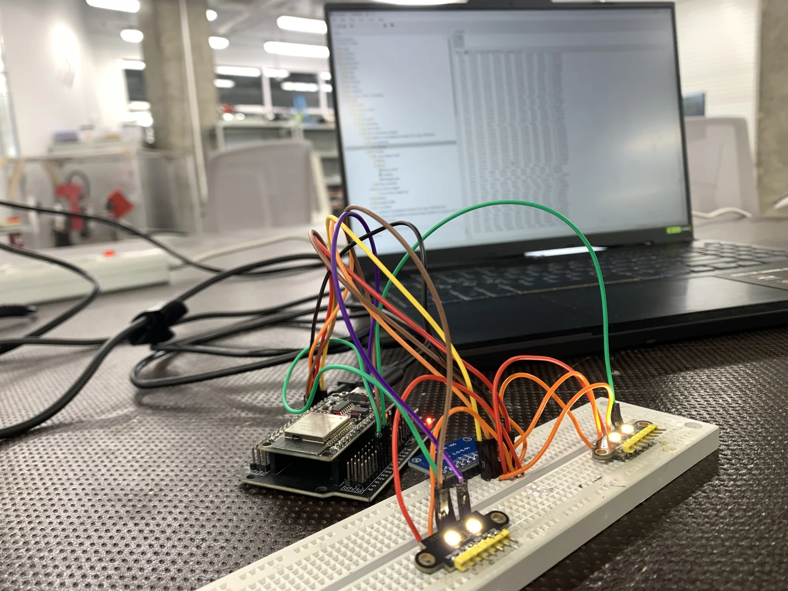
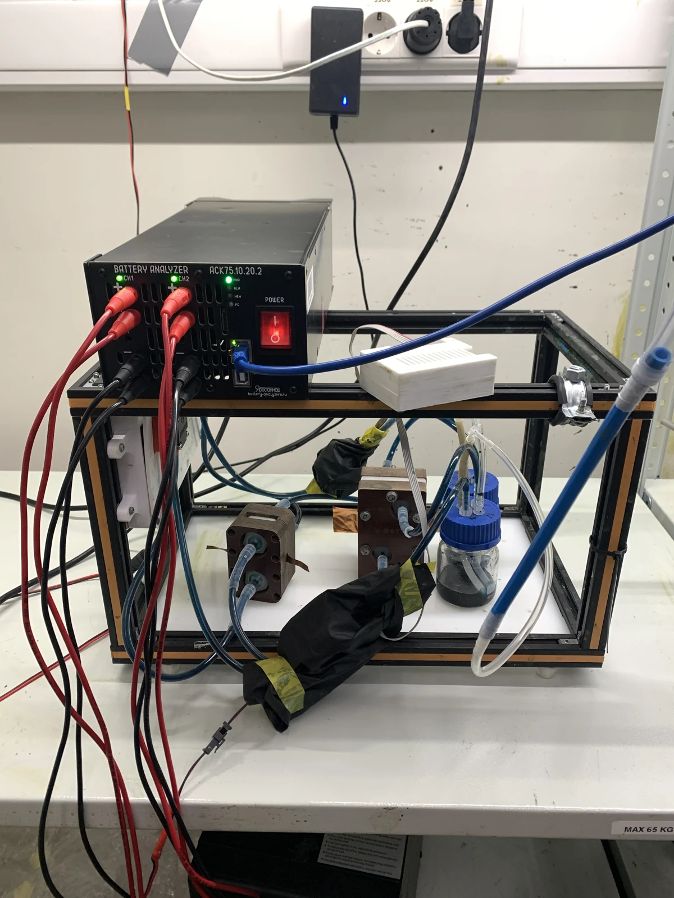
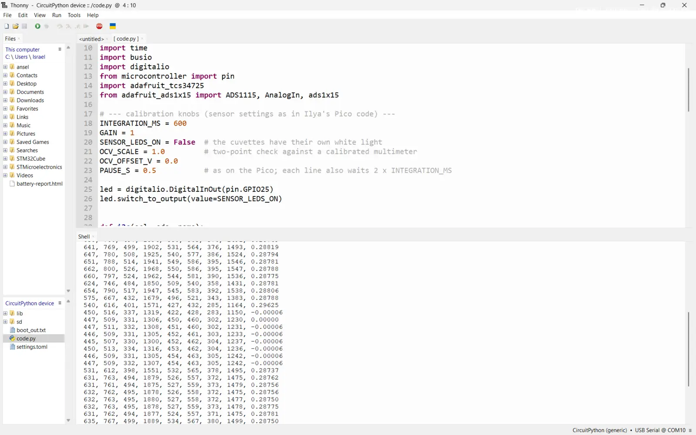
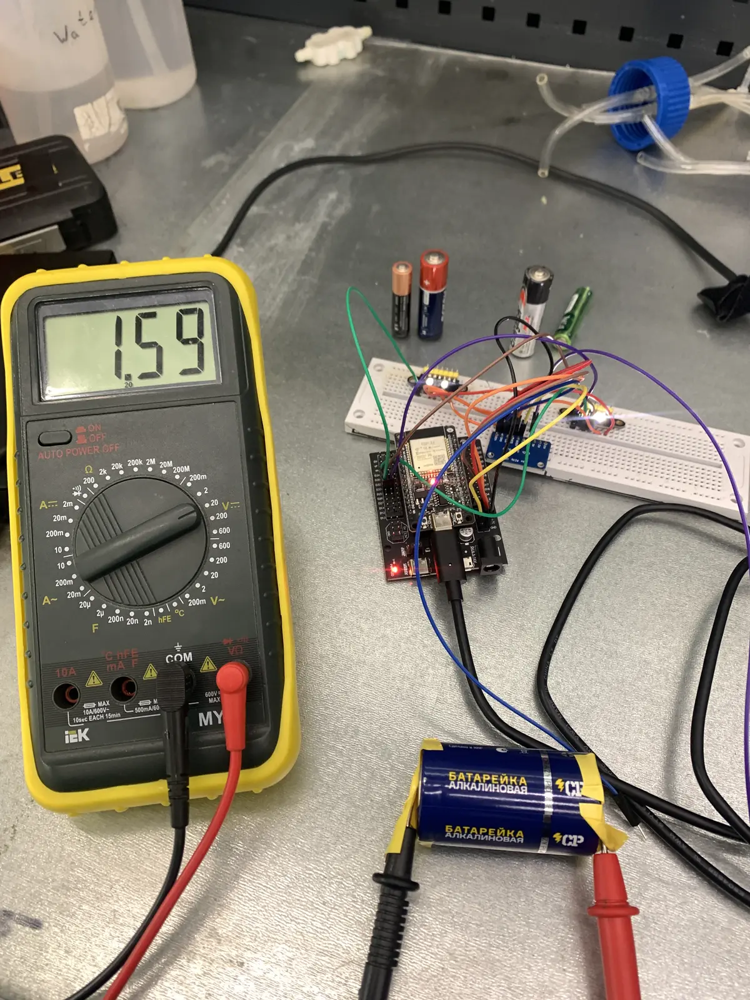

Projects / Lab instrumentation
An OCV and
colour reader.
A low-cost ESP32 reader that logs open-circuit voltage (OCV) and electrolyte colour on a vanadium flow-battery setup.
Why it exists
Two experiments,
one analyzer.
The lab has one battery analyzer, but two experiments need monitoring at the same time: oxidation-state runs on one setup and long cycling on the other. The reader adds OCV and colour monitoring that does not depend on the analyzer. One reader is built; a second is planned, so each setup has its own.
The longer-term aim is to make it part of a battery management system (BMS). Each reader would then have two OCV channels, to measure two OCVs per cell: one on the electrolyte entering the cell and one on the electrolyte leaving it.
The build
From breadboard
to live data.
An ESP32 brings together an ADS1115 voltage module and two colour sensors, and streams the readings to a computer. Building it meant assembling and soldering the electronics, integrating the sensors and getting a live data stream working.




Voltage checks
Checking the reader
before trusting it.
I first checked the voltage channel with its input connected to ground, then measured an alkaline cell alongside a handheld multimeter. The reader agreed with the meter within the meter’s resolution, but the meter could not show smaller differences, so a finer check followed.
| Point | Reference | DIY reader | Result |
|---|---|---|---|
| Zero | Input connected to ground (0 V) | −0.06 mV | Offset negligible |
| Span | 1.5 V alkaline cell, multimeter: 1.59 V | 1.594 V | Agrees within the meter’s resolution |




Further accuracy check
Checking smaller
voltage differences.
A low-voltage bench supply feeds the DIY reader while a Rigol DL3031 measures the same signal. Comparing the readings checks differences too small to resolve on the handheld meter.
This adds a finer reference comparison. More voltage points and simultaneous readings are still needed to separate reader error from source drift and establish accuracy across the operating range.
All clips play silently on a loop at 2× speed when in view. Use the controls to pause. Automatic playback respects reduced-motion preferences.